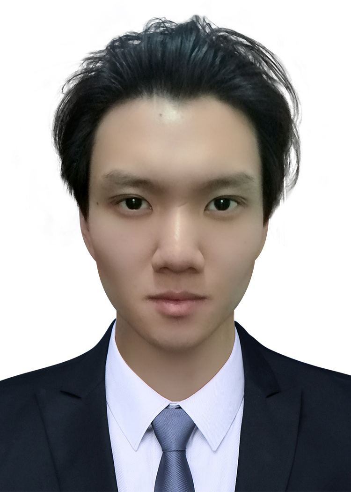

|  |
Email: xiaoyuguo4-c@my.cityu.edu.hk Welcome to my homepage! I am a 4th-year PhD candidate in the Department of Electronic Engineering at City University of Hong Kong (CityU), supervised by Prof. Rosa H.M. Chan. Before that, I got B.E. in Electronic Information Science and Technology at School of Information Science and Engineering, Lanzhou University (LZU), and M.E. in Communication and Information System at School of Information Science and Engineering, Lanzhou University (LZU). Currently I am available for job interview, and I will get my EE PhD degree in 2023, June. |
My research interests lie at the computational neuroscience, bio-signal processing and rehabilitation of stroke patient.
My research topic mainly focuses on motor control of neuroscience by analyzing EMG signals of human being using factorization algorithms (e.g. Non-negative factorization algorithms, rectified latent variable model).
Currently, I am working on the effect of functional electronic stimulation on the rehabilitation of stroke patients.
I am also interested in utilizing machine learning, especially deep learning models, to do EMG factorization, motion analysis and assessment of stroke rehabilitation.
Moderately-Balanced Representation Learning for Treatment Effects with Orthogonality Information (PRICAI2022).
[paper]
Yiyan Huang , Cheuk Hang Leung, Shumin Ma, Qi Wu, Dongdong Wang, Zhixiang Huang.
Robust Causal Learning for the Estimation of Average Treatment Effects (IJCNN-2022, oral). [arXiv]
[paper]
Yiyan Huang , Cheuk Hang Leung, Xing Yan, Qi Wu, Shumin Ma, Zhiri Yuan, Dongdong Wang, Zhixiang Huang.
Interpretable Causal Inference via Causal Graphs (BFS-2022, oral).
[Abstract]
Yiyan Huang , Qi Wu, Dongdong Wang, Zhixiang Huang.
The Causal Learning of Retail Delinquency (AAAI-2021). [arXiv]
[paper]
Yiyan Huang , Cheuk Hang Leung, Xing Yan, Qi Wu, Nanbo Peng, Dongdong Wang, Zhixiang Huang.
Internship at JD Digital Technology-Risk Management Center-Intelligent Model Department.
Reviewers for IJCAI2021, AISTATS2022, ICML2022, Neurips2022, etc.